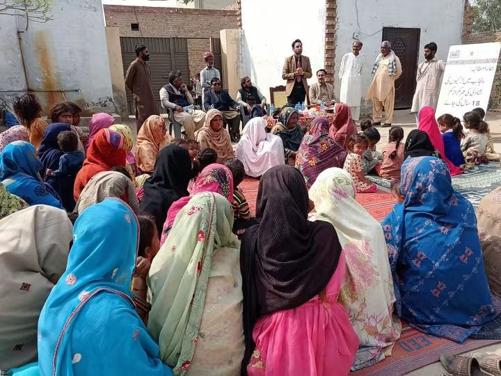
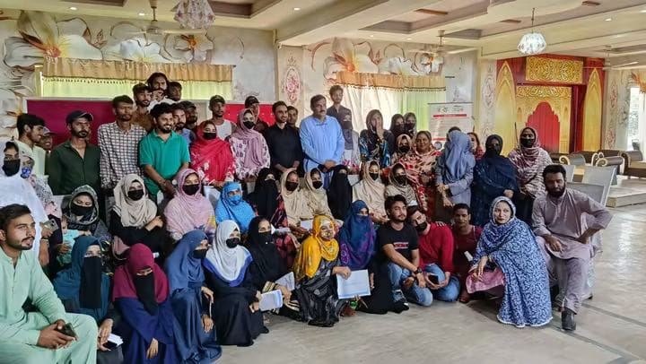

One community, several connected problems
Al-Nisa Welfare Society began in Okara after seeing the challenges many families in the community were facing. Women needed opportunities to learn skills and earn, families struggled to access healthcare, and children needed better support to stay in school. These experiences shaped the areas Al-Nisa chose to focus on, including women's empowerment, family health, education, protection, and community awareness.

Support that builds independence, not dependence
As the Society's work grew, so did its relationships with local institutions, educational organizations, health partners, and international organizations.Al-Nisa Welfare Society is registered with the Social Welfare Department, Government of Punjab, under registration number DOSW/WD&BM(OKA)004. Its work is also reflected in district-level records, where Al-Nisa is listed among local organizations working in health and education across Okara, including vocational and hospital-related services.
